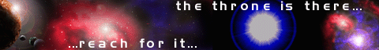

Resources
Capital [c] - Capital is gained through taxing your civilians and is measured in credits [c]. Only civilians that are employed can earn your nation capital. Capital is used in construction buildings, training military and funding research projects.
Element-X [t] - Element-X is a rare element that was recently discovered. It is extremely unstable, and yet amazingly versitile. It also has the unique property of being able to self-reproduce. However, if too much element-x is stored up in the mines, it can cause a massive explosion damaging many buildings. It is measured in tons [t] and can be used in the construction of buildings and in training some military units.
Energy [j] - Energy is just what it is, power, electricity, energy. It is measured in millions of joules [j] and is required to maintain buildings and make attacks. It is produced through three different methods. First, it can be collected through solar radiation, however this process takes up much land and does not produce much energy. A more efficient mode of producing energy is through atomic plants. These plants use plutonium to run, but put a lot more energy per square kilometer than solar panels. The third mode is a very advanced and requires that the species research very heavily into energy production. It is antimatter collision, this process uses antimatter to create energy. It is highly efficient and produces massive amounts of energy.
Plutonium [p] - Plutonium is a resource required to run atomic power plants, it is measured in plutonium rods [p].
Antimatter [a] - Antimatter is the exact opposite of matter, when exposed to matter, an immense release of energy occurs. Antimatter is very difficult to crete and must be done in a laboratory. It is measured in grams of antimatter [a], and is used in antimatter plants.
Mana [m]> - Mana is a magical resource and the exact composites of it are not known. It is used in the casting of magical spells and only mages know how to use it.